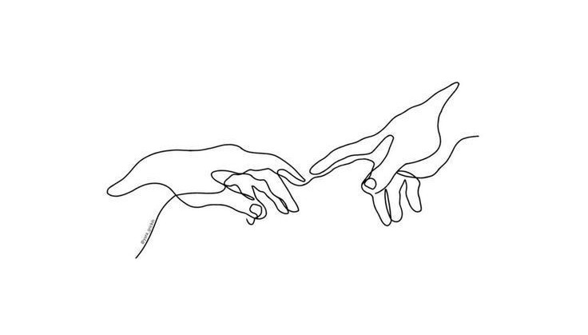

الفن هويه وليس هوايه

الرسم ليس بضع الوان على ورقه وانما يضع الفنان جزء منه داخل لوحته
الرسم ليس بضع الوان على ورقه وانما يضع الفنان جزء منه داخل لوحته
التعلم الرسم بالرصاص وكيف ان للمحاة دور اخر
هنا تعلم الصبر واختلاط الالوان
الاكريليك هو يعلمك ان الاخطاء ليس مسحها سهل